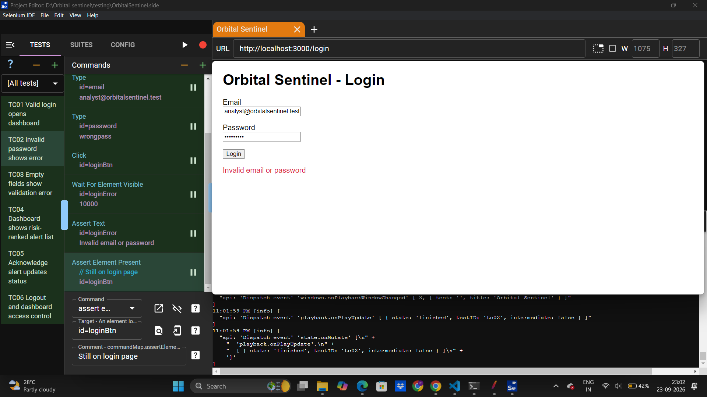
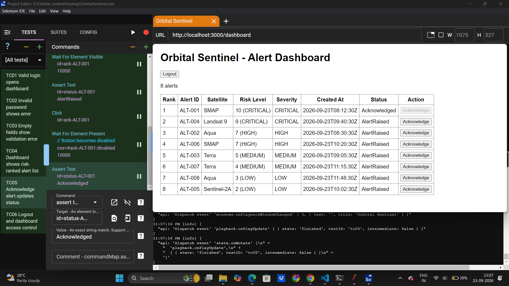
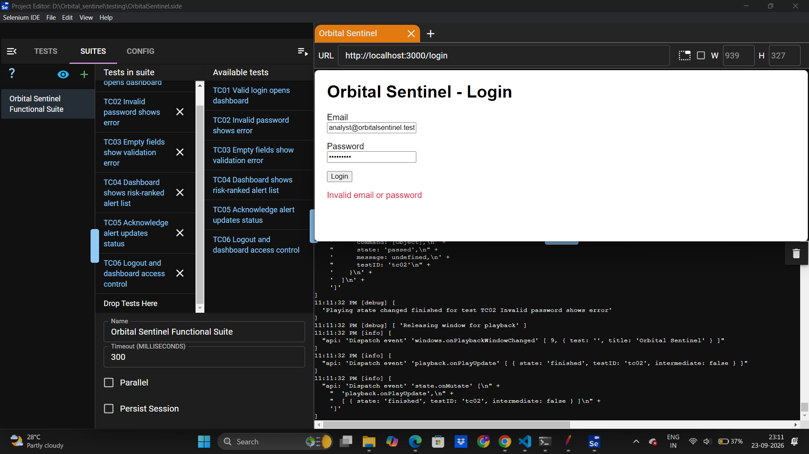
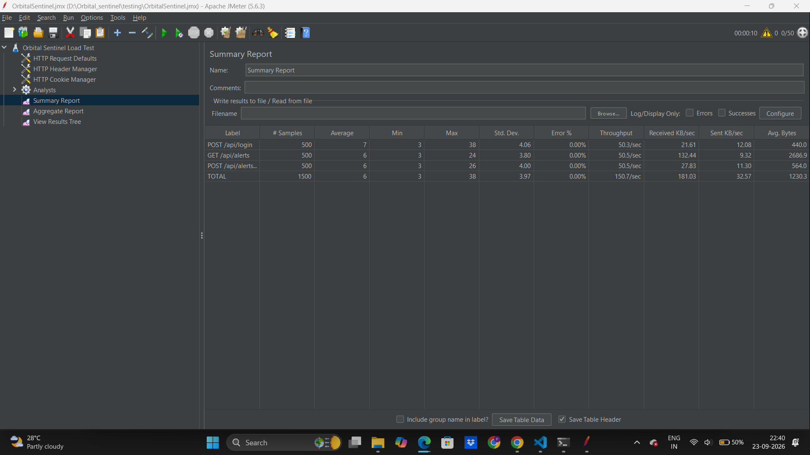
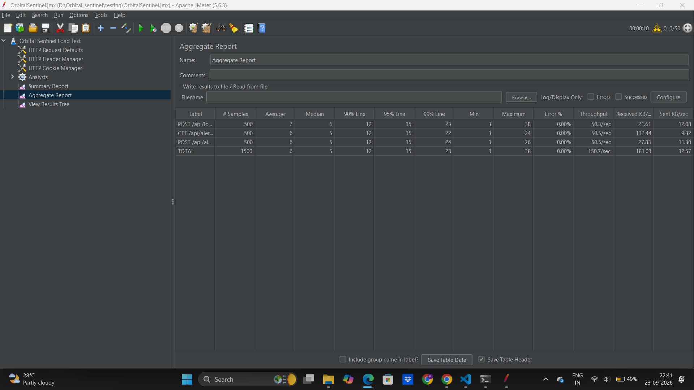
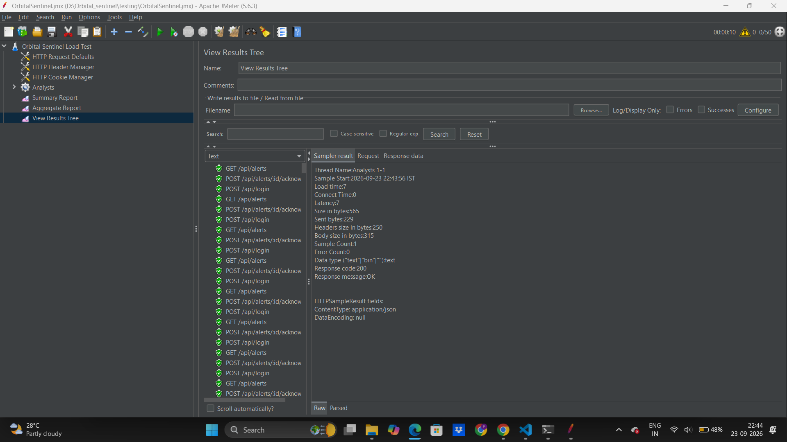

Software Engineering Laboratory
| Name | Pushkar Kumar Mishra |
| Register Number | 24BPS1128 |
| Course | Software Engineering Lab |
| Date | 23rd Sept, 2026 |
| Application under test | Orbital Sentinel — Satellite Telemetry Anomaly Detection System (test build) |
| Tools used | Selenium IDE (functional testing), Apache JMeter 5.6.3 (load / performance testing) |
To design test cases for a web application and execute them using Selenium IDE (functional testing), and to perform a basic load/performance test using Apache JMeter, recording response time and throughput (non-functional testing).
Orbital Sentinel is an early-warning health-monitoring system for satellite fleets (see the SRS and the earlier ER and state-transition experiments). For this experiment, a minimal working build of the system was developed to cover the operator's alert workflow:
POST /api/login, GET /api/alerts, POST /api/alerts/:id/acknowledge.The data model uses the entities from the ER diagram (Experiment 4): Satellite, Detection, Alert and User. The data is mock data held in memory: 5 satellites, 8 detections and 8 alerts.
| Item | Details |
|---|---|
| Operating system | Windows 11 Home |
| Application stack | Next.js 15 + React 19 (TypeScript), Node.js 22; production build (npm run build + npm start) |
| Application URL | http://localhost:3000 |
| Functional testing tool | Selenium IDE (desktop application) |
| Performance testing tool | Apache JMeter 5.6.3 on Java 21 (Eclipse Temurin) |
| Test user | analyst@orbitalsentinel.test / sentinel123 (role: Analyst) |
| TC ID | Module | Test Description | Test Steps | Test Data | Expected Result | Actual Result | Status |
|---|---|---|---|---|---|---|---|
| TC01 | Login | Valid login opens the dashboard | 1. Open /login 2. Enter email and password 3. Click Login | analyst@orbitalsentinel.test / sentinel123 | User is taken to /dashboard; the alert table and the title "Orbital Sentinel - Alert Dashboard" are shown | Login succeeded and the dashboard with the alert table was displayed | Pass |
| TC02 | Login | Invalid password is rejected | 1. Open /login 2. Enter a valid email and a wrong password 3. Click Login | analyst@orbitalsentinel.test / wrongpass | Error "Invalid email or password" is shown; user stays on /login | Error "Invalid email or password" was displayed; the Login button was still present | Pass |
| TC03 | Login | Empty fields are validated | 1. Open /login 2. Click Login with both fields empty | (blank) | Error "Email and password are required" is shown | Not executed (see 3.3) | Not executed |
| TC04 | Dashboard | Alerts are listed in risk order (REQ-16) | 1. Log in 2. Check the alert table | 8 mock alerts | "8 alerts" shown; row 1 is ALT-001, risk "10 (CRITICAL)"; last row is ALT-005 | Not executed as a separate script (see 3.3) | Not executed |
| TC05 | Alert | Acknowledging an alert updates its status | 1. Log in 2. Click Acknowledge on ALT-001 | ALT-001 | Status changes from AlertRaised to Acknowledged; the Acknowledge button becomes disabled | ALT-001 status changed to Acknowledged and its button was disabled; the other alerts stayed AlertRaised | Pass |
| TC06 | Session | Logout, then direct dashboard access is blocked | 1. Log in 2. Click Logout 3. Open /dashboard directly | — | Login page is shown after logout; /dashboard redirects to /login | Not executed (see 3.3) | Not executed |



| Metric | Count |
|---|---|
| Test cases designed | 6 |
| Test cases executed | 3 |
| Passed | 3 |
| Failed | 0 |
| Not executed | 3 |
All executed test cases (TC01, TC02, TC05) passed; no functional defects were found in the login, error-handling or alert-acknowledgement features. When the whole suite was run, Selenium IDE's desktop playback stopped at the hand-over after TC02 (a tool/playback-window issue, not an application failure), so TC03, TC04 and TC06 were not executed in this session. The dashboard in Figure 2 shows the same risk ordering that TC04 checks (ALT-001 at risk 10 first, ALT-005 at risk 2 last).
| Element | Configuration |
|---|---|
| Thread Group ("Analysts") | 50 concurrent users (threads), 10 s ramp-up, 10 loops per user |
| Requests per iteration | 1. POST /api/login (JSON body with test credentials)2. GET /api/alerts3. POST /api/alerts/ALT-00{1..8}/acknowledge (random alert) |
| Total requests | 50 users × 10 loops × 3 requests = 1,500 samples |
| Config elements | HTTP Request Defaults (localhost:3000), HTTP Header Manager (Content-Type: application/json), HTTP Cookie Manager |
| Assertions | Response code = 200 on every request; response body contains "alertId" for GET /api/alerts |
| Listeners | Summary Report, Aggregate Report, View Results Tree |
Response times are in milliseconds (ms).
| Endpoint | Samples | Average | Median | 90% Line | 95% Line | 99% Line | Min | Max | Std. Dev. | Error % | Throughput |
|---|---|---|---|---|---|---|---|---|---|---|---|
| POST /api/login | 500 | 7 | 6 | 12 | 15 | 23 | 3 | 38 | 4.06 | 0.00% | 50.3/sec |
| GET /api/alerts | 500 | 6 | 5 | 12 | 15 | 22 | 3 | 24 | 3.80 | 0.00% | 50.5/sec |
| POST /api/alerts/:id/acknowledge | 500 | 6 | 5 | 12 | 15 | 24 | 3 | 26 | 4.00 | 0.00% | 50.5/sec |
| TOTAL | 1500 | 6 | 5 | 12 | 15 | 23 | 3 | 38 | 3.97 | 0.00% | 150.7/sec |
Network: 181.03 KB/sec received, 32.57 KB/sec sent (total). Average response size: 440 bytes (login), 2,686.9 bytes (alerts), 564 bytes (acknowledge).



| Area | Result |
|---|---|
| Functional testing (Selenium IDE) | 6 test cases designed; 3 executed, all 3 passed (TC01, TC02, TC05); 0 failed; 3 not executed because of a Selenium IDE suite-playback issue |
| Defects found | None in the application. Tool issue: Selenium IDE desktop playback stalled between tests when the suite was run. |
| Load test (JMeter) | 50 users, 10 s ramp-up, 10 loops — 1,500 requests |
| Average / 90th percentile response time | 6 ms / 12 ms |
| Maximum response time | 38 ms |
| Throughput | 150.7 requests/sec |
| Error rate | 0.00% |
| Overall verdict | The executed functional tests passed, and the application met its performance expectations under the tested load. |
Test cases were designed for the Orbital Sentinel web application and executed with Selenium IDE. Login validation and the alert-acknowledgement workflow (AlertRaised → Acknowledged) behaved as specified in all executed tests. A load test with Apache JMeter on the application's REST API recorded an average response time of 6 ms, a 90th-percentile time of 12 ms, a throughput of 150.7 requests/sec and a 0% error rate with 50 concurrent users. This shows the application is functionally correct for the tested features and responsive under moderate load. Both tools were used successfully to carry out functional and non-functional testing.